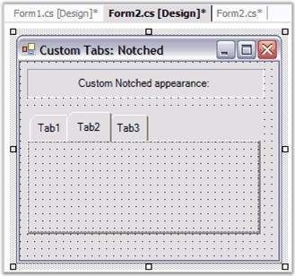
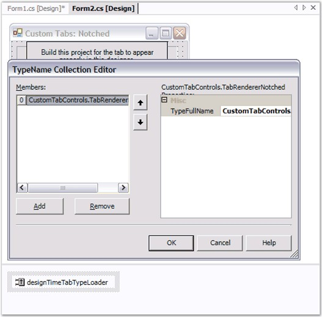
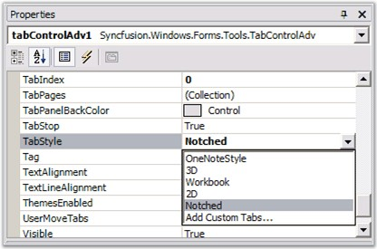

ITabRenderer interface (or derive from TabRendererBase, a base implementation of ITabRenderer), could be implemented to gain more control over the display of tabs.
The Renderer property returns the current Syncfusion.Windows.Forms.Tools.ITabRenderer used by the TabControl to render the TabPanel.

Figure 1052: Custom Tabs with Designer Support
 Note: Refer to CustomTabControl sample which
demonstrates this feature.
Note: Refer to CustomTabControl sample which
demonstrates this feature.
Once you have a Custom ITabRenderer implementation, you can, if necessary, make it available to the TabControlAdv at design-time. To do so,
1. First select the Add Custom Tabs entry in the drop-down list that pops-up from the TabStyle property editor. This will insert a new DesignTimeTabTypeLoader component into your forms designer.

Figure 1053: Add Custom Tabs using the DesignTimeTabTypeLoader
2. Insert the fully qualified type name of your Custom TabRenderer class (for example: Syncfusion.Samples.Tools.TabRendererNotched) to the DesignTimeTabTypeLoader's TypesToLoadList. This will try to load your class into the DesignTimeTabTypeLoader's TypesToLoadList, assuming the type is in the same project as the designer or the assembly in which this type resides is referenced. You will now find an entry in the TabControlAdv.TabStyle editor list corresponding to your Custom TabRenderer.

Figure 1054: Custom TabStyle in Designer
See Also
 TabAlignment
TabAlignment